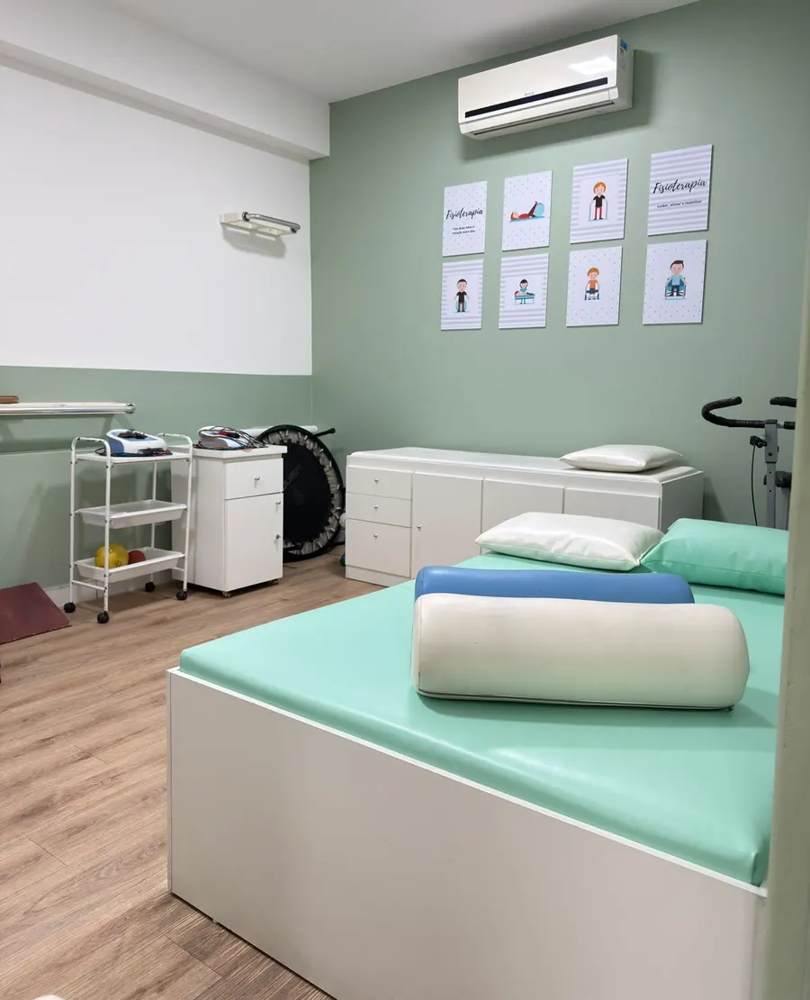

Programa de fisioterapia para idosos
Envelhecer em Movimento
Envelhecer não significa parar! Manter-se ativo ajuda a preservar a força, o equilíbrio, a mobilidade e a independência. A prática regular de atividade física também contribui para a saúde do corpo e da mente.

Por que se movimentar?
Porque se mover é viver melhor
Movimente-se hoje para viver melhor amanhã. A atividade física regular, com orientação:
- Fortalece músculos e ossos
- Melhora o equilíbrio e ajuda a prevenir quedas
- Favorece a circulação e o condicionamento físico
- Mantém a mobilidade e a independência
- Cuida do coração e da saúde geral
- Promove bem-estar, convivência e autoestima
O que você encontra no programa?
Fisioterapia ao seu lado em todas as fases da vida
Alongamento e fortalecimento
Exercícios de alongamento, mobilidade articular e fortalecimento.
Equilíbrio e prevenção de quedas
Treino de equilíbrio e coordenação.
Atividades funcionais
Os movimentos do dia a dia, trabalhados com orientação.
Orientações em saúde
Para uma vida mais ativa, também fora da clínica.
Cuide do seu corpo, preserve sua independência e aproveite a vida!
Como começar?
No seu ritmo, com orientação
- Comece devagar e aumente o ritmo gradualmente
- Escolha atividades prazerosas e adequadas à sua condição física
- Mantenha uma rotina regular, com orientação profissional
- Use roupas e calçados confortáveis e mantenha-se hidratado
Respeite seus limites. Se sentir dor, tontura, falta de ar intensa ou mal-estar, pare e procure orientação.
Quem conduz
Quem conduz
Simone Werner
Fisioterapeuta · Crefito-4 35177-F
“Cuidar é mais que tratar: é acolher, ouvir, é transformar vidas com conhecimento, experiência e sensibilidade.”
- Especialista em Fisioterapia Neurofuncional adulto e infantil
- Formação em Facilitação Neuromuscular Proprioceptiva (FNP)
- Formação em Traumato-ortopedia
Na mesma clínica
Outros programas e especialidades
Envelhecer não significa parar!
Movimente-se, cuide-se e viva melhor. Mande uma mensagem e a recepção explica os horários e como participar.